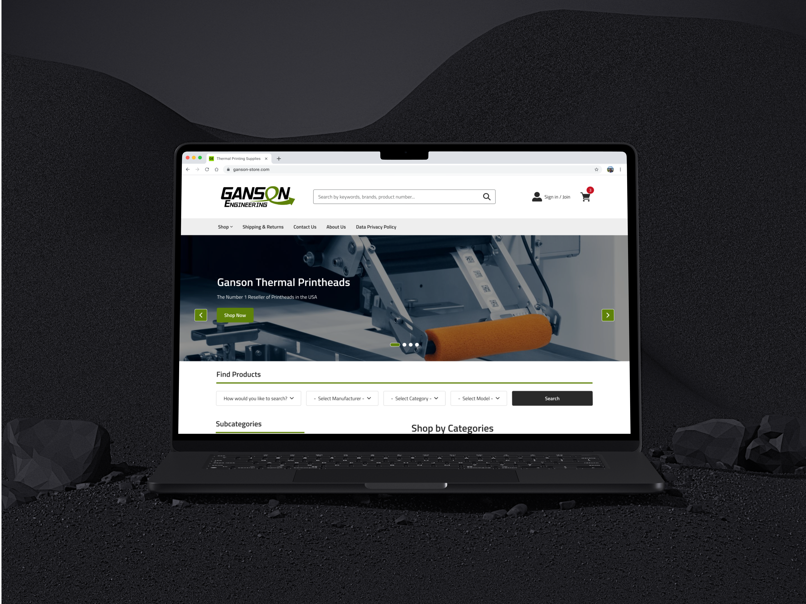
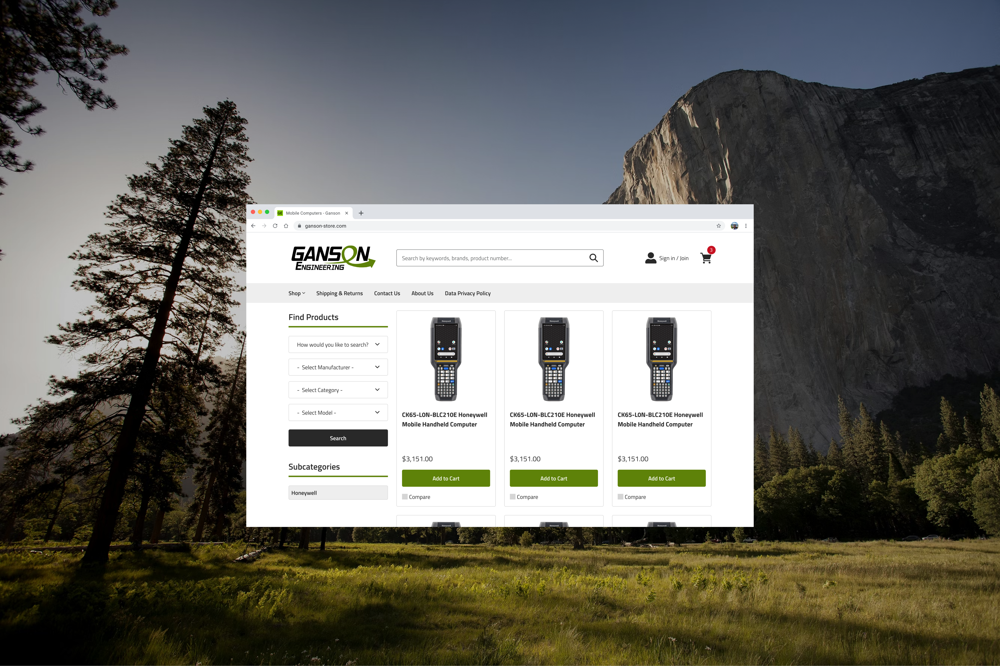
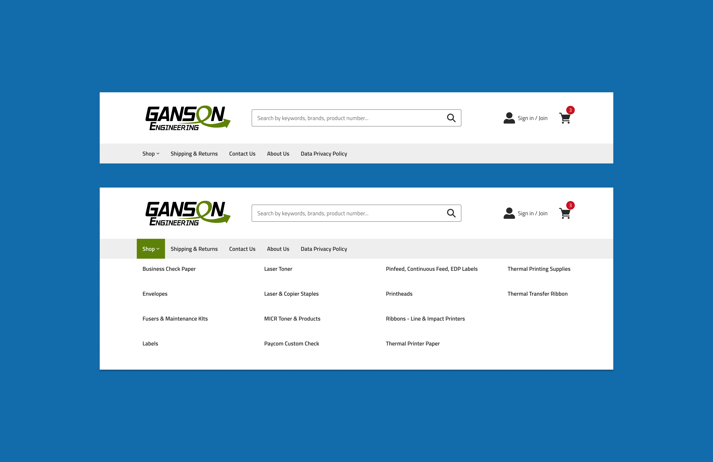
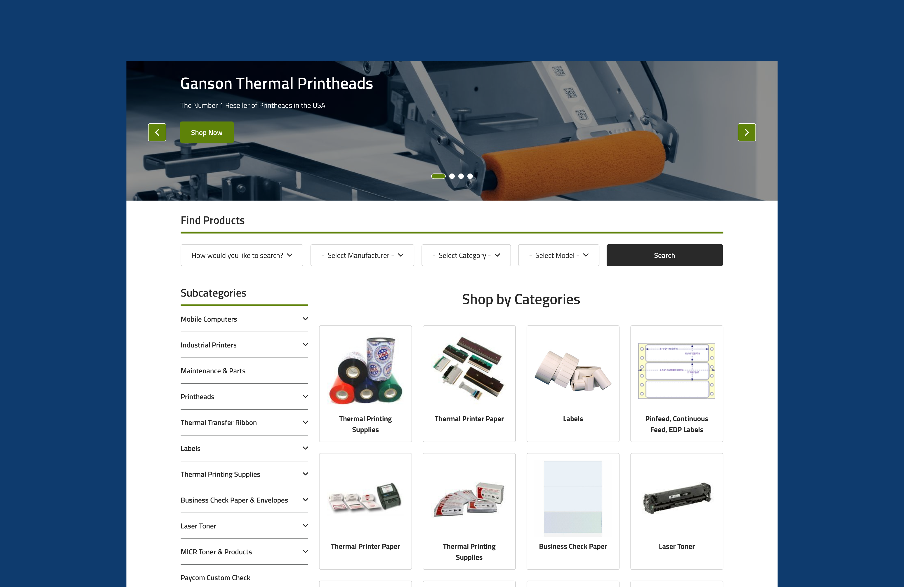
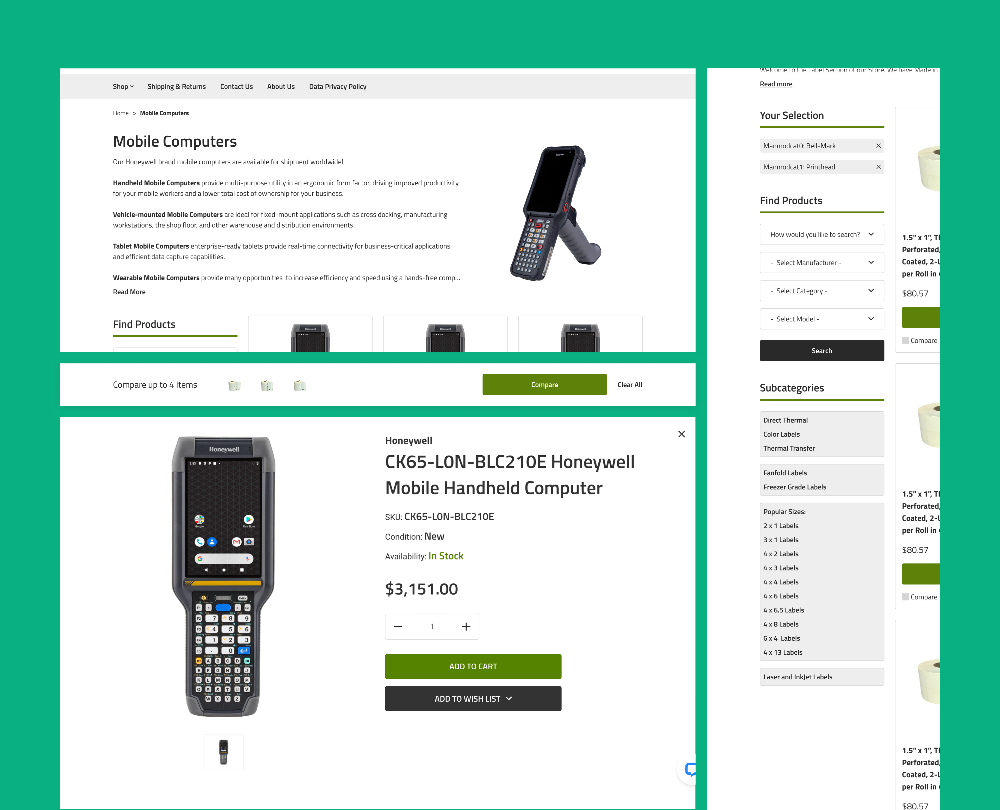
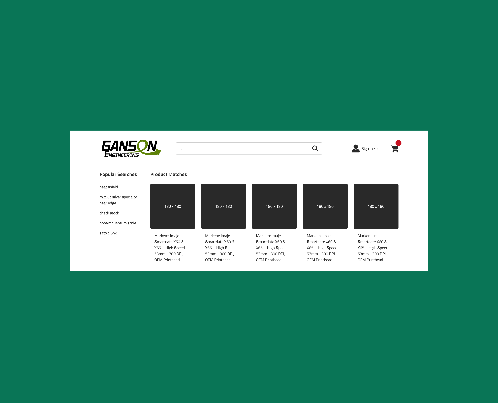
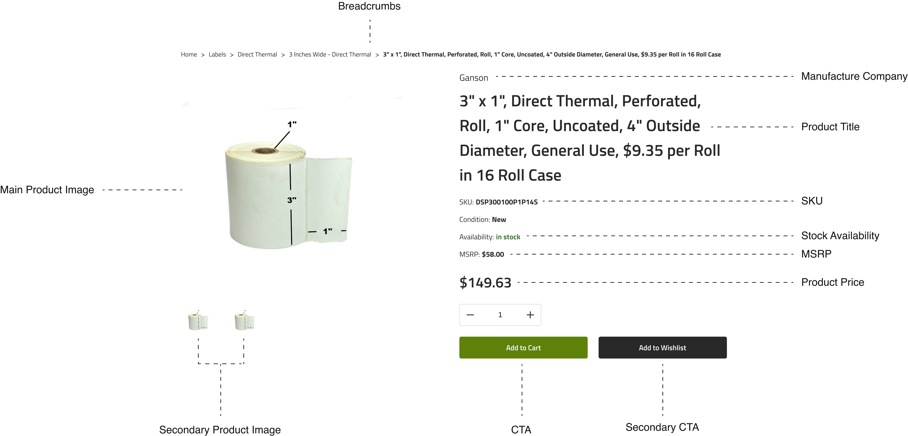
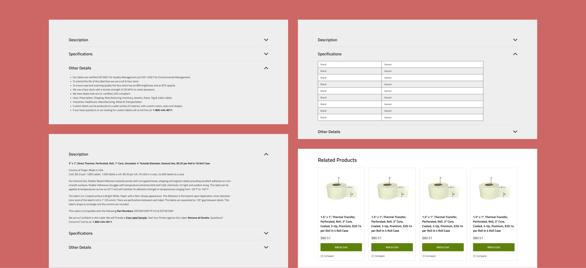
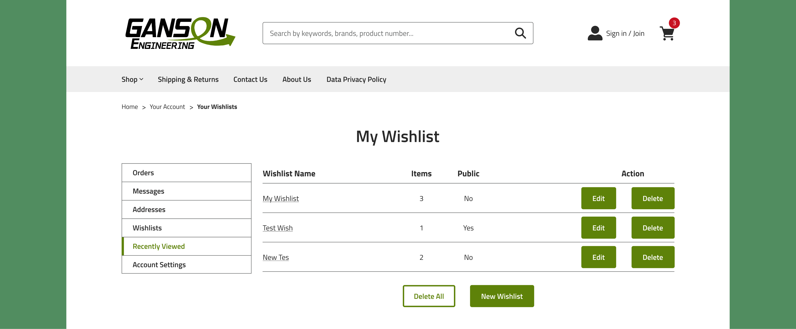
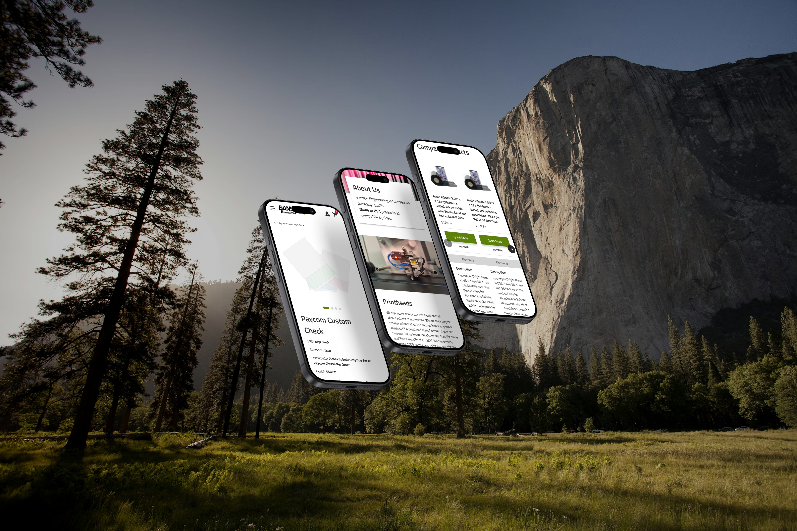

Users weren't just "browsing". They were mission-critical buyers looking for specific products to buy in bulk. The design needed to prioritize find-ability over discovery.
Implementing a high-clarity search and filtering architecture
Enhancing product organization and re-ordering tools
Feature #1
Increasing Findability
User Story
"As a maintenance technician, I need to find a specific replacement part by its serial number and buy it immediately."

Designed an oversized, high-contrast search field integrated directly into the mega menu which removes visual distractions and ensures that both Guest and B2B users can locate a product the moment the page loads.

I replaced the traditional marketing home page with a category landing page. This design improved users to browse the catalog immediately, reducing the click-depth to find a product by 50%.
Feature #2
Seamless Browsing
User Story
"As a Technical Buyer, I need to rapidly scan and filter products by key specifications directly in the feed so I can identify the correct part without navigating to product detail pages."


To reduce the friction of finding technical parts, I implemented a robust comparison tool and filtering logic that empowers users to isolate specific attributes (Left). Complementing this, the search results (Right) were designed for rapid validation, exposing essential data points upfront to accelerate the procurement workflow.

Feature #3
Information Organization
User Story
"As a Technical Buyer, I need to validate specific attributes (like SKU, Condition, and Specs) immediately so that I can confirm compatibility without scrolling through unrelated information."

To reduce the friction of finding technical parts, I implemented a robust comparison tool and filtering logic that empowers users to isolate specific attributes (Left). Complementing this, the search results (Right) were designed for rapid validation, exposing essential data points upfront to accelerate the procurement workflow.
Feature #4
Project Lists & Re-ordering
User Story
"As a Procurement Manager, I need to organize parts into separate lists ('Warehouse A' vs. 'Warehouse B') so that I can quickly re-order for specific projects without searching for individual items every month."

